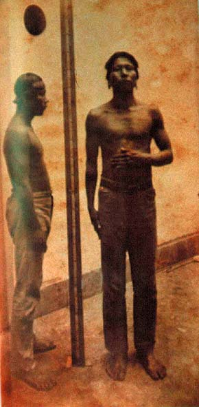

| Others and selves |
|  |
| Emil August Goeldi, Indios Krahú, Goiás |
In the Western tradition, the construction of self and other is closely associated with modern notions of subject and object, and of consciousness and empiricity, linked to a primacy accorded to vision above all the other senses. Unlike touch and hearing, which blur or traverse the boundary between the body and surrounding space -between inside and outside- vision locates the subject in a relation between space and place which, from Rennaissance optics onward, was conceived in terms of a pyramid or cone centered on a (monocular) receiver, the eye, towards and for the benefit of which, the surrounding space rendered itself. This relation, called linear perspective, also implied a non-reciprocal relation between subjects and objects of seeing, whose close associations with an emergent notion of the subject as proprietor the term "beholder" betrays.
In the nineteenth century, the rationalist faith in the truth-value of vision gave rise to a wide variety of machines for the recording and reproduction of sights, primed on the linearperspectivist relation between beholder and object, or, between a source of light and its receiver. Photography was only the most successful and lasting of these: in fact, as Michel Foucault has shown, a pan-optic principle underpinned the construction of knowledge as a whole, as well as its immediate relation to power formations now based on the abstract, regulated procedures of disciplines rather than on the spectacle of sovereignty as in the era of absolutism. The model for these knowledge-power relations, according to Foucault, was the Panopticon invented by the English pedagogist and penal reformer Jeremy Bentham, consisting in an arrangement of spaces that allowed for comprehensive observation of their occupants (prison inmates, hospital patients, soldiers in a barracks) from a central viewing platform that in itself remained invisible to those subjected to its gaze.
The panoptic principle could also be associated to the visualizing practices of emerging scientific disciplines such as anthropology and sociology, in their attempt to record and classify the physiques and material cultures of non-Western peoples or of the popular masses of the new industrial metropolis. Photography was only one of many devices of ensuring the non-reciprocity of seeing and, thus, of inscribing power in the field of vision. Visual representations often combined more than one of these technologies of rendering the other as an object to be quantified and classified: the image of the top of this page shows two indigenous men from the interior of Brazil, subjected both to the capture by the photographic lens and to anthropometric measurement (observe the measuring scale at the centre of the photograph - a technique also introduced, around the same time, for the recording of the physiognomies of criminal suspects.